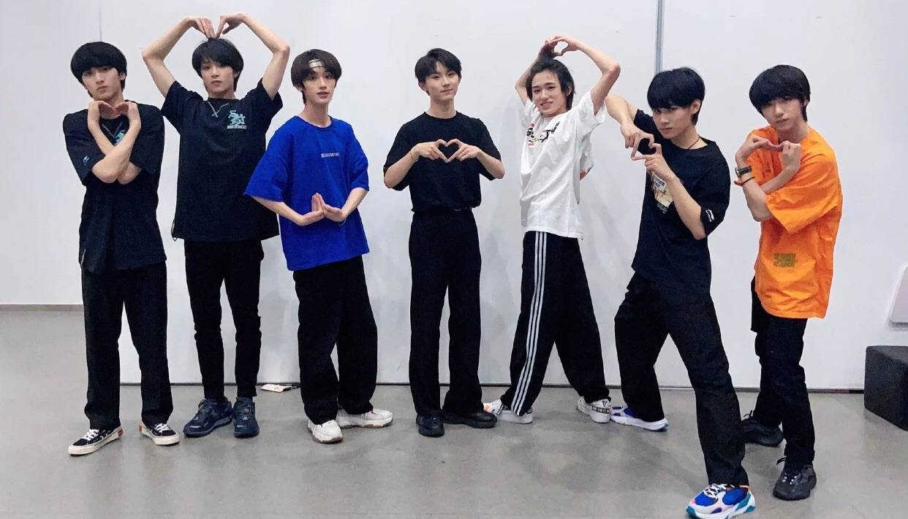

破云
纵使千疮百孔，年华老去，我还有你寻遍千山万水，踏破生死之际——再次相聚之前，
谢谢你带我回到这人世间。
“停云霭霭，时雨濛濛；八表同昏，平陆成江。”严峫摩挲着下巴，突然说：“好名字。”
抱最好的希望，做最坏的打算，尽最大的努力。
我想跟你一起从战场上手拉手凯旋，再不济肩并肩马革裹尸.
“我从未拥有过来自父母手足的亲情，不曾体验过男女之间的爱情，
甚至没交过什么朋友，连友情都相当匮乏。如果说曾有人最接近我心里那个位置的话，那个人是你。”
那些欢笑玩耍的过往，七月未央的夏夜，余晖中的浮尘，灿烂的灯海，
在此刻汇聚成洪流轰然破闸，吟唱在虚空中盘旋上升直至天堂: 你的荣光，你的脸庞，那如钻石般璀璨的光茫
可否爱我如初，直至地老天荒？
——当韶华逝去，演出落幕，白夏流年已成过往；你可否依然为我喝彩鼓掌，直至地老天荒？
风从天穹深处席卷大地，穿过山川河流，平原铁轨，
以及城市浩瀚飘渺的灯火，吹着尖锐的哨子，旋转飞舞直奔地平线尽头。
我们在看悬疑小说的时候，都是跟随主角怀疑所有可能作案的对象，
再一层层抽丝剥茧后，将坏人绳之以法。但为什么我们从未怀疑过主角呢？
不论前方是否樯倾楫摧，踏出一步便将粉身碎骨；所有罪恶与仇恨，
都将在你我的手中了结。
我来接你了，江停。
“是看一眼少一眼。就算咱俩一块活到九十九，不也是过一天少一天吗？没毛病。”
“我活到九十九，你九十七就够了。”
你只能做你自己，永远都无法取代任何人，哪怕那个人死了都一样。
每一个被害人，都曾经是父母的寄托和骄傲。
“回忆，情感，心理印记，这些细节都随着离别被反复升华，死亡是最好的滤镜。”
“死人不可超越，死人永远是胜利者，就是这么个道理。”
犹如困兽在陷阱中左冲右突，明知道四面楚歌，却还想拼死撞出一条生路，哪怕最终粉身碎骨。
但他知道不论再以假乱真的精心演出都有可能毁在最微不足道的细节里，命运就是会那么安排，
让平时毫不珍惜的东西，成为生命终结时触手不及的奢求。
命运就像精巧的机关，在每一个可能改变的节点上严丝合缝，所有悲欢离合，所有幽微关窍，
最终都将导向冥冥中早已谱写好了的收场
人海茫茫，鬼影幢幢，它在暗处窥伺你，你却无法抓住这只披着人皮的鬼。